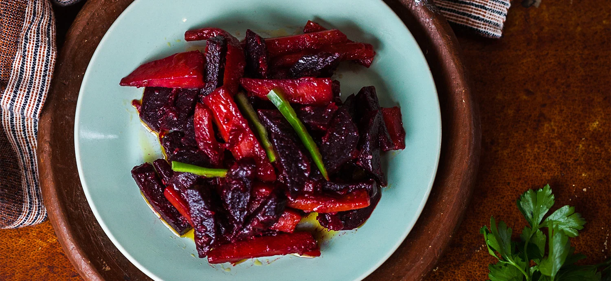

Key Sir Alicha

Description
Key sir alicha is a wonderful dish that incorporates beets, potatos, and carrots
Not spicy at all, relative to other dishes. It provides a refreshing taste to any platter that also very healthy!
Ingredients
- 1 medium sized beetroot, peeled and cut into batons
- 1 medium sized carrot, peeled and cut into batons
- 1 medium sized carrot, peeled and cut into batons
- 1/4 cup of canola/vegetable oil
- 1/2 red onion chopped julienne style
- 1 teaspoon of finely chopped garlic
- Salt to taste
Steps
- In a saucepan, add the oil on a medium heat and when it starts to heat add the onions and cook for 5 minutes.
- Add the garlic and cook for 2 minutes and then add the beetroot and cook for 10 minutes by stirring occasionally and adding a splash of hot water to prevent from burning
- Add the carrots and cook for 8 minutes before adding the potatoes. Cook between 10 to 15 minutes until all the root vegetables are cooked. Salt to taste.